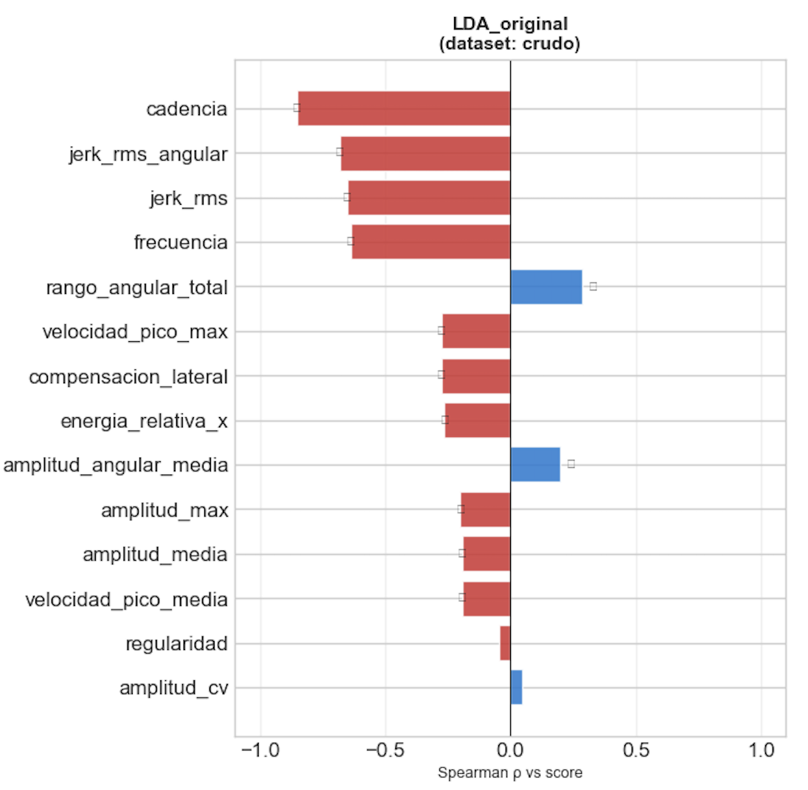
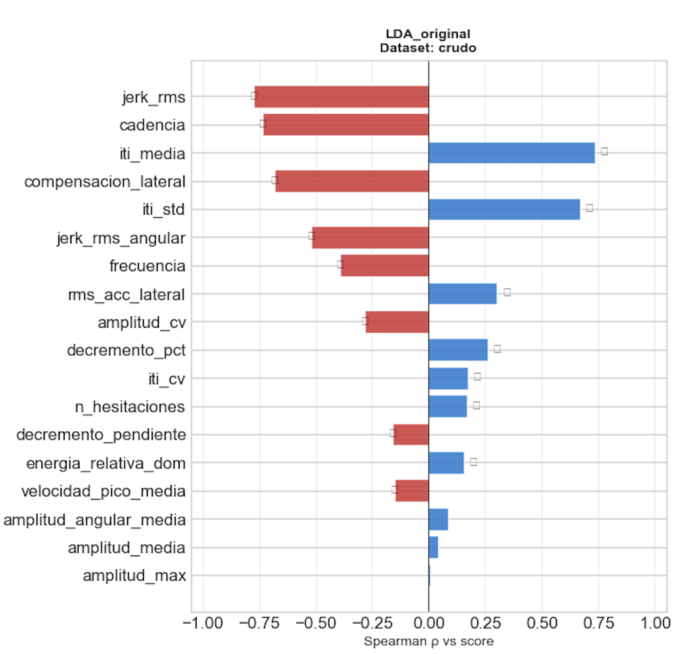

PDG
2026
CONTEXTO
Parkinson
Más de 10 millones de personas viven con enfermedad de Parkinson en el mundo (Parkinson's Foundation, 2024).
Escala MDS-UPDRS
Estándar internacional para la evaluación de síntomas motores en Parkinson.
Pruebas clave
Golpeteo de dedos y movimientos de pronación/supinación para evaluar bradicinesia.
Vimov
Plataforma desarrollada por el grupo de investigación conjunto FVL–Icesi.
FLUJO DE VIMOV
Flujo de datos e integración de componentes

MARCO TEÓRICO
MARCO TEÓRICO
Cinco pilares conceptuales de la solución
Bradicinesia
Síntoma motor central del Parkinson. (Kandel et al., 2013)
MDS-UPDRS Parte III
Estándar internacional 0–4. (Goetz et al., 2008)
Sensores IMU
Acelerómetro + giroscopio para captura de movimiento. (Britting, 1971)
Software Clínico
Calidad, seguridad y usabilidad. SWEBOK · IEEE · IEC 62304
Machine Learning
Modelos que aprenden patrones a partir de datos biomecánicos. (Mitchell, 1997)
Sistema de Coordenadas IMU
La orientación del sensor define cómo se interpretan los ejes X, Y, Z. La estandarización del sistema de referencia es crítica para que las señales sean comparables entre sesiones y pacientes.
Fuente: Tomaszewski et al., 2017 · doi:10.1515/rgg-2017-0013

ESTADO DEL ARTE
ESTADO DEL ARTE
Matriz comparativa de soluciones existentes vs. este proyecto
| Característica | Höglund et al. (2021) | Sánchez-Fernández (2023) | Dai et al. (2015) | Choi et al. (2016) | Yu et al. (2023) | Bremm et al. (2024) | Este Proyecto (Vimov) |
|---|---|---|---|---|---|---|---|
| IMU | ✓ | ✓ | ✓ | ✓ | ✓ | ✓ | |
| Captura por video | ✓ | ||||||
| Prueba 3.4 (golpeteo) | ✓ | ✓ | ✓ | ✓ | |||
| Prueba 3.6 (pronación) | ✓ | ✓ | ✓ | ✓ | ✓ | ||
| Protocolo estándar | △ | △ | ✓ | ✓ | |||
| Integración plataforma clínica | ✓ |
Ventaja diferencial
Vimov integra una captura usando IMUs con protocolos estandarizados MDS-UPDRS dentro de una plataforma clínica, facilitando evaluaciones reproducibles y escalables del movimiento.
OBJETIVOS
OBJETIVO GENERAL
Desarrollar un módulo integrado en el ecosistema Vimov que permita medir y analizar de forma objetiva las pruebas de golpeteo de dedos y pronación/supinación de la mano, correspondientes a la Parte III de la escala MDS-UPDRS, con el fin de complementar la evaluación clínica en pacientes con enfermedad de Parkinson.
Objetivos Específicos
HIPÓTESIS DE INVESTIGACIÓN
Las características cinemáticas obtenidas mediante una unidad de medición inercial (IMU) ubicada en la muñeca permiten diferenciar de manera significativa los niveles de severidad motora establecidos por la escala MDS-UPDRS en las pruebas de golpeteo de dedos y pronación/supinación.
Condiciones esperadas
Las métricas extraídas presentan diferencias estadísticamente significativas entre los grupos evaluados.
Las métricas permiten discriminar los distintos niveles de severidad mediante técnicas de clasificación.
Los resultados proveen evidencia de viabilidad tecnológica del sistema en entorno controlado de laboratorio.
PROTOCOLO
DE CAPTURA
Estandarización de la colocación del sensor, sistema de referencia y postura del paciente para garantizar reproducibilidad
DISEÑO EXPERIMENTAL
Parámetros estandarizados sustentados en literatura científica
Base de literatura
| Componente | Autor / Año | Aporte principal |
|---|---|---|
| Postura | Kremer et al., 2023 | Distintas posturas en MDS-UPDRS |
| Postura | Houdijk et al., 2015 | Ajustes posturales naturales generan variabilidad en movimiento |
| Postura | Stins et al., 2015 | Bipedestación introduce oscilaciones |
| Ubicación de IMU | di Biase et al., 2018 | IMU en muñeca ofrece menor ruido |
| Ubicación de IMU | Höglund et al., 2021 | Zona distal del antebrazo mayor estabilidad |
| Tipo de Movimiento | Goetz et al., 2008 (MDS-UPDRS) | Define ejecución y criterios clínicos de las pruebas |
| Sistema de referencia | Tomaszewski et al., 2017 | La orientación del sensor |
PARÁMETROS DEFINIDOS
Especificaciones de captura estandarizadas
Posición sentada
Espalda recta, pies firmes en el suelo, sin apoyo de brazo.
Sensor en muñeca
Superficie dorsal distal del antebrazo del brazo evaluado.
Orientación fija X, Y, Z
Sistema de referencia con ejes preestablecidos para consistencia inter-sesión.
10 repeticiones por mano
Una mano a la vez; registro separado de mano dominante y no dominante.

Sistema de referencia IMU
PRONACIÓN / SUPINACIÓN
Prueba 3.6 · Pasos estandarizados del protocolo de captura
- 1Sentar al paciente con la espalda recta y los pies firmes en el suelo.
- 2Solicitar que extienda el brazo hacia el frente, a la altura del hombro, con el codo recto.
- 3Colocar la IMU en la muñeca del brazo evaluado, sobre la superficie dorsal distal del antebrazo.
- 4Indicar al paciente que realice pronación y supinación alternadas de la mano 10 veces, tan rápido y completamente como pueda.
- 5Registrar solo una mano por vez.
- 6Asegurar que no existan movimientos compensatorios del tronco o del hombro durante la ejecución.

GOLPETEO DE DEDOS
Prueba 3.4 · Pasos estandarizados del protocolo de captura
- 1Sentar al paciente en posición estable, con la espalda recta.
- 2Solicitar que eleve la mano evaluada al frente a nivel de los ojos, con el codo a 90°.
- 3Colocar la IMU en la muñeca del brazo evaluado, sobre la superficie dorsal distal del antebrazo.
- 4Indicar al paciente que realice 10 golpes del pulgar contra el dedo índice, tan rápido y ampliamente como sea posible.
- 5Realizar la prueba en una mano a la vez.
- 6Verificar que el paciente no realice movimientos compensatorios del brazo o del tronco.

VALIDACIÓN DEL PROTOCOLO
Revisión con personal médico de la Fundación Valle del Lili
El protocolo fue revisado con personal médico de la Fundación Valle del Lili, orientada a validar sus componentes metodológicos y su viabilidad para una futura aplicación en contexto clínico.
Aspectos validados

OBJETIVO ESPECÍFICO 2
Establecer una correspondencia entre las métricas objetivas calculadas y la escala MDS-UPDRS, comparando los resultados cuantitativos con las puntuaciones de neurólogos para objetivar los criterios clínicos de cada nivel de la escala.
PIPELINE DE PROCESAMIENTO
Etapas de limpieza, segmentación y extracción de métricas cinemáticas
Etapa 1 — Limpieza y acondicionamiento
Etapa 2 — Segmentación y extracción
CRITERIOS MDS-UPDRS
Escala de severidad 0–4 · Prueba 3.4 Golpeteo de Dedos & Prueba 3.6 Pronación/Supinación
Golpeteo de Dedos
Índice sobre pulgar · 10 repeticiones · rápido y amplio
Sin alteraciones. Movimiento regular, velocidad y amplitud normales.
1–2 interrupciones o hesitaciones; ligera lentitud; decremento de amplitud al final de los 10 golpes.
3–5 interrupciones; lentitud moderada; decremento de amplitud a mitad de la secuencia.
>5 interrupciones o al menos 1 arresto prolongado; decremento desde el 1.er golpe.
No puede o apenas puede ejecutar la tarea por lentitud extrema, interrupciones o decrementos.
Pronación / Supinación
Brazo extendido · palma arriba/abajo alternadas · 10 veces
Sin alteraciones. Ritmo, velocidad y amplitud completamente normales.
1–2 interrupciones o hesitaciones; ligera lentitud; decremento de amplitud al final de la secuencia.
3–5 interrupciones; lentitud moderada; decremento de amplitud a mitad de la secuencia.
>5 interrupciones o al menos 1 arresto prolongado; decremento desde la 1.ª repetición.
No puede o apenas puede ejecutar la tarea por lentitud extrema, interrupciones o decrementos.
Lentitud progresiva
Decremento de rango
Pausas e interrupciones
Regularidad del movimiento
BASELINE — POBLACIÓN SANA
Definición de rangos normativos para detección de desviaciones en Parkinson
Población
23 participantes sanos (20–55 años) sin diagnóstico neurológico
Protocolo
15 sujetos × 6 muestras + 8 × 4 = ~122 pruebas/mano
Extracción de datos
Segmentación por ciclos + análisis por percentiles
Objetivo
Rangos normativos (P5-P95) para detectar desviaciones
Pronación — Top métricas
| Métrica | Media | CV | Rel. |
|---|---|---|---|
| Vel. Pico (°/s) | 484.3 | 25.4% | Alta |
| Amplitud (°) | 968.5 | 25.4% | Alta |
| Regularidad (%) | 84.5 | 5.2% | Alta |
| Jerk RMS (°/s²) | 3598.9 | 38.2% | M-A |
| Frecuencia (Hz) | 1.291 | 11.6% | M-A |
Golpeteo — Top métricas
| Métrica | Media | CV | Rel. |
|---|---|---|---|
| Cadencia (Hz) | 1.694 | 28.6% | Alta |
| ITI Media (s) | 0.650 | 35.8% | Alta |
| Amplitud (°) | 1.982 | 58.8% | Alta |
| Regularidad (%) | 61.4 | 21.4% | Alta |
| Jerk RMS (°/s²) | 10.29 | 48.8% | M-A |
MODELO CLASIFICADOR — LDA
Linear Discriminant Analysis con regularización — validación LOSO
¿Por qué LDA?
Con N=3 sujetos por score en estadios 1–4, los modelos complejos (SVM, Random Forest) tienen más parámetros que grados de libertad efectivos, garantizando sobreajuste. LDA con regularización es la alternativa más robusta para este tamaño de muestra.
Configuración (idéntica en ambas pruebas)
Solver: lsqr (mínimos cuadrados regularizados)
Regularización: shrinkage = 0.95
Preprocesamiento: StandardScaler antes de LDA
Validación LOSO
Con N=3 sujetos por score, la validación cruzada estándar mezclaría datos del mismo sujeto en train y test, inflando las métricas. Leave-One-Subject-Out (LOSO) garantiza que el modelo nunca ve al sujeto de test durante el entrenamiento.
Accuracy global
AUC OvR por score
AUC macro
Matriz de confusión
RESULTADO — PRONACIÓN/SUPINACIÓN
Modelo LDA ajustado · shrinkage=0.95, amplitud corregida
📊 Resultados Generales
Accuracy LOSO: 73.4% indica una capacidad predictiva robusta bajo validación cruzada LOSO.
AUC Macro: 91.4% demuestra excelente discriminación entre estadios.
Features clave: cadencia, amplitud media, frecuencia y compensación lateral.
Accuracy: 74.37% ± 1.01%
AUC macro: 91.61% ± 0.32%
MATRIZ DE CONFUSIÓN — PRONACIÓN
Performance por estadio (one-vs-rest) y análisis de desempeño
🎯 AUC por Estadio

✓ Conclusión Pronación
El modelo LDA demuestra excelente capacidad discriminativa, especialmente en estadios severos. La prueba de pronación/supinación es altamente predictiva de bradicinesia.
RESULTADO — GOLPETEO DE DEDOS
Modelo LDA ajustado · shrinkage=0.95, amplitud corregida
📊 Resultados Generales
Accuracy LOSO: 58.75% refleja mayor complejidad en discriminación de golpeteo comparado con pronación.
AUC Macro: 84.97% sigue siendo robusto, especialmente en estadios avanzados.
Features clave: ITI media, ITI std y cadencia son los principales discriminadores.
Accuracy: 58.50% ± 1.02%
AUC macro: 85.10% ± 0.20%
MATRIZ DE CONFUSIÓN — GOLPETEO
Performance por estadio (one-vs-rest) y análisis de desempeño
🎯 AUC por Estadio

✓ Conclusión Golpeteo
El modelo LDA muestra buena discriminación en estadios leve-moderado, con excelencia en estadios severos. La prueba de golpeteo complementa el análisis de bradicinesia.
OBJETIVO ESPECÍFICO 3
Desarrollar un módulo integrado en Vimov, junto con una integración en la aplicación IMUs que permita la gestión de pruebas, la visualización de señales capturadas y la revisión de resultados cuantitativos de forma intuitiva por parte del personal clínico.
ANÁLISIS DE LA ARQUITECTURA BASE
Diagramas realizados para Vimov y la aplicación móvil IMUs
Arquitectura Vimov
Diagramas C4 y modelo de datos
Diagrama C4 – Nivel 1 (Contexto)
Diagrama C4 – Nivel 2 (Contenedores)
Modelo Entidad–Relación (MER)
Diagrama C4 – Nivel 3 (Componentes)
Documentación completa de la arquitectura web
Aplicación Móvil IMUs
Diagramas de diseño y flujo
Diagrama de clases
Diagrama de secuencia
Diagrama de flujo de datos
Documentación de la app móvil de captura
MODELO C4 NIVEL 2 ARQUITECTURA VIMOV Diagramas de contexto, contenedores, componentes y relaciones

DIAGRAMA DE FLUJO DE DATOS

TECNOLOGÍAS USADAS
Stack tecnológico de Vimov y de la aplicación móvil IMUs
Vimov — Frontend

Vimov — Backend

App IMUs — Móvil

APLICACIÓN IMUs
Interfaz móvil para captura, visualización y control de sesiones
MÓDULO VIMOV
Gestión de pruebas, visualización de señales y revisión de resultados cuantitativos
PRUEBAS DE SOFTWARE
Cobertura y tipos de prueba en App IMUs y en Vimov
App IMUs
| Tipo de prueba | Cantidad |
|---|---|
| Regresión | 122 |
| Unitarias | 48 |
| Integración | 64 |
| Total | 234 |
Vimov
| Tipo de prueba | Cantidad |
|---|---|
| Regresión | 53 |
| Unitarias | 161 |
| Integración | 72 |
| Total | 286 |
Total combinado
520 pruebas en total entre ambos sistemas, con cobertura de features del 83% en App IMUs y 96% en Vimov.
✓ Validación con stakeholder
El sistema fue validado con el stakeholder Nicolás Salazar (investigador i2t) mediante una prueba de uso libre, en la que evaluó de forma general la app IMUs y la plataforma Vimov simulando el rol de personal clínico, cubriendo el flujo de captura, la experiencia de usuario y la interpretación de los resultados.
OBJETIVO ESPECÍFICO 4
Validar el sistema mediante pruebas internas en el laboratorio, midiendo consistencia y utilidad clínica preliminar en condiciones controladas (TRL 3).
METODOLOGÍA EXPERIMENTAL
Diseño y estrategia de validación en laboratorio
En este nivel se demuestra que la solución es técnicamente viable, los componentes funcionan integrados, y el sistema se evalúa en condiciones controladas.
El objetivo es la validación técnica del sensor para capturar variables biomecánicas.
Estrategia experimental
Se diseñó un entorno de simulación que guía de forma visual y auditiva las métricas definidas por la MDS-UPDRS, modulando artificialmente velocidad, interrupciones y amplitud.

VOLUMEN EXPERIMENTAL
Muestra, línea base y justificación metodológica
Muestra principal
3 participantes sanos sin diagnóstico de Parkinson
3 × 160 simulaciones = 480 simulaciones experimentales
Línea base complementaria
23 participantes sanos para establecer normalidad motora
Justificación muestral
El tamaño de la muestra se justifica porque el objetivo en esta etapa TRL 3 (Prueba de Concepto) es la validación técnica del sensor para capturar variables biomecánicas, no la generalización clínica poblacional. Las 480 simulaciones experimentales permiten evaluar la capacidad discriminativa del sistema en condiciones controladas.
ANÁLISIS INFERENCIAL
Pronación / Supinación — Prueba 3.6
Kruskal–Wallis
Todas las features principales muestran diferencias significativas entre grupos. p < 0.001. Las métricas de cadencia, frecuencia y dinámica presentan los mayores tamaños de efecto (η² > 0.45).
Top 5 Biomarcadores

ANÁLISIS INFERENCIAL
Golpeteo de Dedos — Prueba 3.4
Kruskal–Wallis
La mayoría de features muestran diferencias entre grupos. p < 0.001. Métricas de temporización (ITI) presentan los mayores efectos (η² > 0.50).
Limitación — Amplitud
Sin significancia estadística (p>0.05). Límite anatómico del IMU de muñeca para movimientos distales.
Top 5 Biomarcadores

CORRELACIÓN DE SPEARMAN
Relación monotónica entre métricas cinemáticas y severidad MDS-UPDRS
Pronación / Supinación

Cadencia, jerk RMS y frecuencia presentan las correlaciones negativas más fuertes con el score, consistentes con un movimiento más lento y menos dinámico a mayor severidad.
Golpeteo de Dedos

jerk RMS (ρ=−0.775), cadencia (ρ=−0.733) e ITI media (ρ=+0.733) muestran correlaciones fuertes y clínicamente coherentes con la escala MDS-UPDRS.
CONCLUSIONES
& TRABAJO FUTURO
Viabilidad técnica demostrada, limitaciones identificadas y próximos pasos del ecosistema Vimov
CONCLUSIONES
Cumplimiento de objetivos y hallazgos principales
Integración técnica ✓
Vimov e IMUs completamente integrados. El módulo opera de extremo a extremo: captura, procesamiento y visualización.
IMU válido ✓
En pronación se obtuvo η² hasta 0.556 y AUC macro 0.883, confirmando la detección de enlentecimiento.
Limitación
La amplitud en Golpeteo no logró significancia, evidenciando límites del IMU de muñeca para movimientos distales.
Muestra
La falta de pacientes reales limitó el estudio a TRL 3, sin posibilidad de generalización clínica formal.
⚠ Alcance real del OE2
La correspondencia con la escala MDS-UPDRS se estableció contra scores simulados por los integrantes siguiendo criterios conductuales, no contra puntuaciones asignadas por neurólogos. La validación clínica real queda pendiente para TRL 4.
Conclusión principal
Este trabajo demuestra la viabilidad de integrar evaluación motora cuantitativa dentro del ecosistema Vimov–IMUs, contribuyendo hacia evaluaciones objetivas y basadas en evidencia.
TRABAJO FUTURO
Extensiones identificadas para evolucionar el módulo Vimov–IMUs
- 1 Integración multimodal: Incorporar visión por computador para la prueba de golpeteo de dedos, complementando la captura IMU con análisis de vídeo para superar las limitaciones de movimientos distales.
- 2 Validación clínica real: Extender la evaluación a pacientes diagnosticados con enfermedad de Parkinson en la Fundación Valle del Lili, avanzando hacia TRL 4–5.
- 3 Evolución del modelo predictivo: Mejorar la sensibilidad, especificidad y generalización del clasificador LDA, explorando modelos con mayor capacidad para muestras pequeñas.
- 4 Reposicionamiento del IMU: Explorar ubicaciones alternativas del sensor para la prueba de golpeteo de dedos, como un guante instrumentado o sensores en la falange distal para capturar directamente la amplitud del movimiento, limitación principal del modelo actual.
- 5 Expansión a más pruebas MDS-UPDRS: Incluir otras pruebas motoras de la Parte III (rigidez, temblor en reposo) para construir un perfil motor completo del paciente.
REFERENCIAS
Bibliografía principal del proyecto
Bourque, P., & Fairley, R. E. (2014). Guide to the Software Engineering Body of Knowledge (SWEBOK 2014). IEEE Computer Society.
Britting, K. R. (1971). Inertial navigation systems analysis. Wiley-Interscience.
Choi, J. H. et al. (2016). Development of an assessment method of forearm pronation/supination based on mobile phone accelerometer data. IJBSBT, 8(2). https://doi.org/10.14257/ijbsbt.2016.8.2.01
Dai, H. et al. (2015). Quantitative assessment of parkinsonian bradykinesia based on an IMU. BioMedical Engineering Online, 14(1). https://doi.org/10.1186/s12938-015-0067-8
di Biase, L. et al. (2018). Quantitative analysis of bradykinesia and rigidity in Parkinson's disease. Frontiers in Neurology, 9. https://doi.org/10.3389/fneur.2018.00121
Dorsey, E. R. et al. (2018). The emerging evidence of the Parkinson pandemic. Journal of Parkinson's Disease, 8(s1). https://doi.org/10.3233/JPD-181474
Goetz, C. G. et al. (2008). MDS-Sponsored Revision of the Unified Parkinson's Disease Rating Scale. Movement Disorders, 23(15). https://doi.org/10.1002/mds.22340
Höglund, G. et al. (2021). The importance of IMU placement in assessing upper limb motion. Medical Engineering and Physics, 92. https://doi.org/10.1016/j.medengphy.2021.03.010
Kandel, E. R. et al. (2013). Principles of neural science. McGraw-Hill.
Kremer, N. I. et al. (2023). Supine MDS-UPDRS-III Assessment: An Explorative Study. Journal of Clinical Medicine, 12(9). https://doi.org/10.3390/jcm12093108
Postuma, R. B. et al. (2015). MDS clinical diagnostic criteria for Parkinson's disease. Movement Disorders, 30(12). https://doi.org/10.1002/mds.26424
Su, D. et al. (2025). Projections for prevalence of Parkinson's disease and its driving factors in 195 countries and territories to 2050. BMJ. https://doi.org/10.1136/bmj-2024080952
Sánchez-Fernández, L. P. et al. (2023). A Computer Method for Pronation-Supination Assessment in Parkinson's Disease. Bioengineering, 10(5). https://doi.org/10.3390/bioengineering10050588
Tomaszewski, M. et al. (2017). Orientation sensor systems. https://doi.org/10.1515/rgg-2017-0013
Yu, T. et al. (2023). Clinically Informed Automated Assessment of Finger Tapping Videos in Parkinson's Disease. Sensors, 23(22). https://doi.org/10.3390/s23229149
¡GRACIAS!
Evaluación motora cuantitativa para una clínica más objetiva y reproducible
Davide Flamini · Nicolás Cuéllar · Andrés Cabezas
Universidad Icesi · Facultad Barberi · 2026